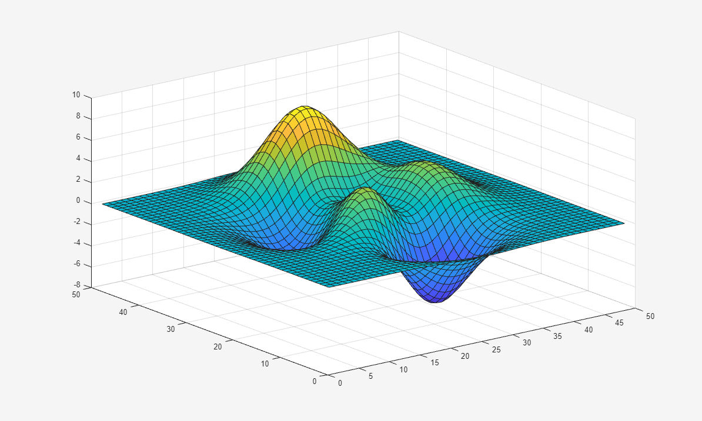
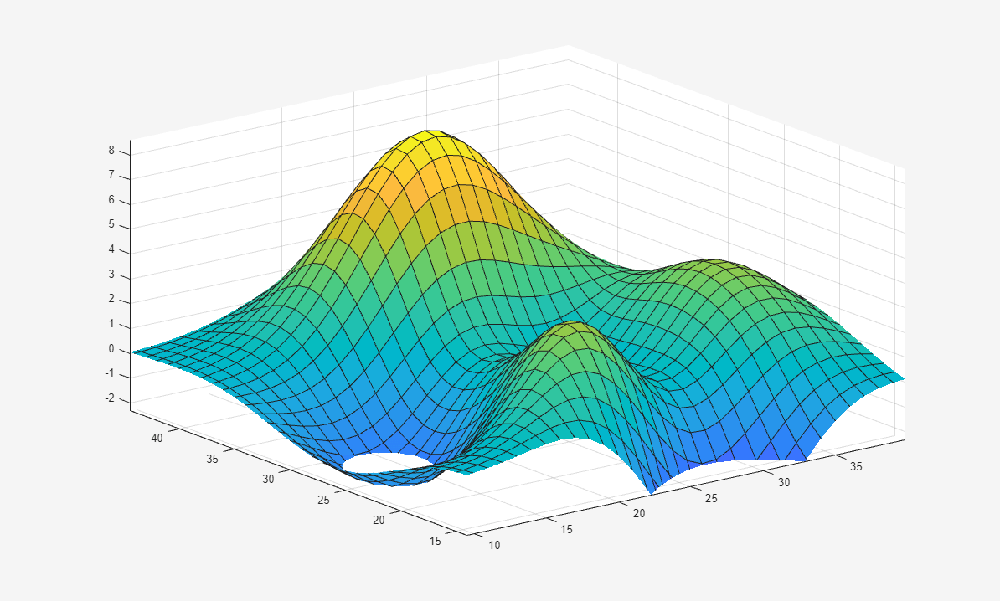

zoom
Enable zoom mode
Description
You can use zoom mode to explore data by interactively changing the limits of
axes. Enable or disable zoom mode, and set other basic options, by using the
zoom function. To further control zoom mode behavior, return and use a
zoom object.
Most charts support zoom mode, including line, bar, histogram, and surface charts. Charts
that support zoom mode typically display the zoom in  and zoom out
and zoom out  icons in the axes toolbar.
icons in the axes toolbar.
You can also interactively explore data using built-in axes interactions that are enabled by default. For example, you can zoom in and out of the view of the axes by scrolling or pinching. Built-in interactions do not require you to enable an interaction mode and respond faster than interaction modes. However, you can enable zoom mode to customize the zooming behavior. For more information about built-in interactions, see Control Chart Interactivity.
Creation
Description
zoom sets the zoom mode for all
axes in the current figure. For example, optionzoom on enables zoom mode,
zoom xon enables zoom mode for the x-dimension
only, and zoom off disables zoom mode.
When zoom mode is enabled, zoom the view of the axes using the cursor, the scroll wheel, or the keyboard.
Cursor — To zoom in, position your cursor where you want the center of the axes to be and click. To zoom out, hold Shift and click. To zoom into a rectangular region, click and drag. To return an axes object to its baseline zoom level, double-click within the axes.
Scroll wheel — To zoom in, scroll up. To zoom out, scroll down.
Keyboard — To zoom in, press the up arrow (↑) key. To zoom out, press the down arrow (↓) key.
Some built-in interactions remain enabled by default, regardless of the current
interaction mode. To disable built-in zoom interactions that are independent of the zoom
mode, use the disableDefaultInteractivity function.
zoom toggles the zoom mode. If zoom mode is disabled, then
calling zoom restores the most recently used zoom option of
on, xon, or yon.
zoom( zooms the current axes by the
specified zoom factor without affecting the zoom mode. Zoom in by specifying
factor)factor as a value greater than 1, for example,
zoom(3). Zoom out by specifying factor as a
value between 0 and 1, for example, zoom(0.5).
zoom( sets the zoom
mode for all axes in the specified figure for any of the previous syntaxes. Specify the
additional argument as a zoom mode option or a zoom factor. For example, to enable zoom
mode for all axes in the figure fig,___)fig, use
zoom(fig,'on'). To zoom all of the axes by a factor of 2, use
zoom(fig,2).
zoom( sets the zoom mode
for the specified axes. Specify the additional argument as a zoom mode option or a zoom
factor. For example, to enable zoom mode for the axes ax,___)ax, use
zoom(ax,'on'). (since R2023a)
Before R2025a: Use this syntax with apps created in App
Designer or using the uifigure function.
Input Arguments
Zoom mode option, specified as one of these values:
'on'— Enable zoom mode.'off'— Disable zoom mode. Some built-in interactions remain enabled by default, regardless of the current interaction mode. To disable built-in zoom interactions that are independent of the zoom mode, use thedisableDefaultInteractivityfunction.'reset'— Set the current zoom level as the baseline zoom level. Once you set the baseline zoom level, callingzoom out, double-clicking in the axes, or clicking the Restore View icon from the axes toolbar returns axes to this
zoom level.
icon from the axes toolbar returns axes to this
zoom level.'out'— Return the current axes to its baseline zoom level.'xon'— Enable zoom mode for the x-dimension only.'yon'— Enable zoom mode for the y-dimension only.'toggle'— Toggle the zoom mode. If zoom mode is disabled, then'toggle'restores the most recently used zoom option of'on','xon', or'yon'. Using this option is the same as callingzoomwithout any arguments.
Zoom factor, specified as a positive number. Zoom in by specifying
factor as a number greater than 1. Zoom out by specifying
factor as a number between 0 and 1. In this case, the axes zoom
out by 1/factor.
Target figure, specified as a Figure object. Specifying a target
figure sets the mode for all current or future Axes children.
Target axes, specified as an Axes object.
Properties
Object Functions
Note
If you call any of these object functions for a zoom object, then
MATLAB enables legacy exploration modes on the figure. For more information, see
enableLegacyExplorationModes.
Use zoom object functions to customize the zooming behavior of axes objects within a figure. For all of these functions, the axes and zoom objects must be associated with the same figure.
| The Calling Enabling zoom mode for axes using
Note You can achieve the same functionality without entering legacy exploration
modes by setting the |
| The Calling Returning the zoom
mode of axes using Note You can achieve the same functionality without entering legacy exploration
modes by querying the |
| The Calling
Setting the zoom dimension for
axes using Note You can achieve the same functionality without entering legacy exploration
modes by setting the |
| The Calling Returning the zoom dimension of axes using
Note You can achieve the same functionality without entering legacy exploration
modes by querying the |
| The Calling For more information about the camera view angle, see Camera Graphics Terminology. |
| The Calling |
| This function is not recommended. Use
Calling
The axes
zoom dimension that is set by |
| This function is not recommended. Use
Calling The axes zoom dimension that is returned using
|
Examples
Plot a surface and enable zoom mode.
surf(peaks)
zoom on

Zoom into the tallest peak by clicking on it. Then, set the baseline zoom level.
Future calls to zoom out, double-clicking in the axes, or clicking
the Restore View  icon from the axes toolbar return axes to this baseline
zoom level.
icon from the axes toolbar return axes to this baseline
zoom level.
zoom reset

Zoom into the highest peak a second time by clicking on it. Then, return to the baseline zoom level you set by zooming out.
zoom out
Create four axes in a tiled chart layout, and assign each a different zoom behavior. Then, interactively zoom the axes.
tiledlayout(2,2) ax1 = nexttile; plot(1:10); z = zoom; ax2 = nexttile; plot(rand(3)); setAllowAxesZoom(z,ax2,false); ax3 = nexttile; surf(peaks); setAxesZoomConstraint(z,ax3,'xy'); ax4 = nexttile; contour(peaks); setAxesZoomMotion(z,ax4,'horizontal');
Plot a surface and create a context menu using the uicontextmenu function.
surf(peaks) cm = uicontextmenu;
Then, add an item to the menu. Specify a label and a callback that closes the figure.
m = uimenu(cm);
m.Label = 'Close figure';
f = gcf;
m.Callback = @(src,event)close(f);
Create a zoom object. Add the context menu to the zoom object by setting its
ContextMenu property. Then, enable zoom mode.
z = zoom(f);
z.ContextMenu = cm;
z.Enable = 'on';
Close the figure by right-clicking and selecting Close figure.
More About
Alternative Functionality
Axes Toolbar
For some charts, enable zoom mode by clicking the zoom in  or zoom out
or zoom out  icons in the axes toolbar.
icons in the axes toolbar.